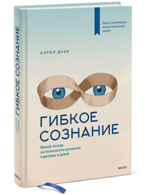
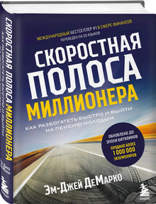
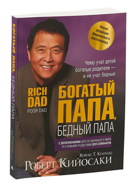

Гибкое сознание

Описание книги
Из этой книги вы узнаете, как установка на данность обрекает людей на провал, а установка на рост — открывает путь к самореализации, выстраиванию успешной карьеры и налаживанию счастливых взаимоотношений с окружающими в любом возрасте. А еще — как можно привить такую установку и себе, и другим.
Самый богатый человек в Вавилоне
Описание книги
Книга Джорджа С. Клейсона 1926 года, в которой даются финансовые советы с помощью сборника притч, действие которых происходит 4097 лет назад в древнем Вавилоне. Книга остается в печати почти столетие спустя после первоначальной публикации притч и считается классикой личных финансовых советов.
Скоростная полоса миллионера

Описание книги
Долго считалось, что создание богатства требует много времени. Получи диплом, всю жизнь работай, откладывай по 10% от зарплаты, и годам к шестидесяти пяти, возможно, ты станешь состоятельным человеком. А может, и нет — как повезет. Автор этой книги предлагает другой путь. Эм-Джей ДеМарко, американский предприниматель, инвестор и консультант, называет его «СКОРОСТНАЯ ПОЛОСА МИЛЛИОНЕРА». Это целостная психологическая и математическая формула, которая взламывает код финансовой свободы. В своей книге ДеМарко дает свыше 300 рекомендаций по обогащению в короткие сроки, то есть за 5—10 лет.
Богатый папа, бедный папа

Описание книги
Право каждого человека - грамотно и осознанно распорядиться личным будущим так, чтобы создать себе желаемое богатство. Книга обучает вас разговаривать на языке денег, объясняет, как заставить деньги двигаться и прирастать, то есть работать для вас. Долой традицию, которая вынуждает вас всю жизнь работать ради них!
Иди туда, где страшно
Описание книги
Жить легко и свободно нам мешают наши страхи. Они, словно тигры, рычат: "даже не думай пробовать", "откажись, все равно ничего не выйдет", "еще не время". И мы слушаем. И мы отступаем. Откладываем свою мечту и жизнь в долгий ящик. Джим Лоулесс – бизнес-тренер, один из самых популярных европейских мотивационных спикеров. В числе его клиентов - Apple, British Telecom, Barclays Bank и Национальная служба здравоохранения Англии. Стал первым британским фридайвером, установившим рекорд по нырянию в глубину без акваланга. За 12 месяцев освоил профессию жокея. Всего этого он добился благодаря 10 правилам, которые сам изобрел и опробовал на себе.